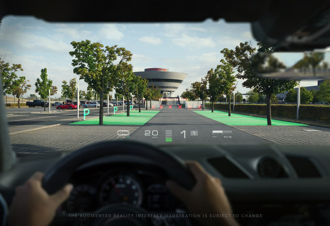
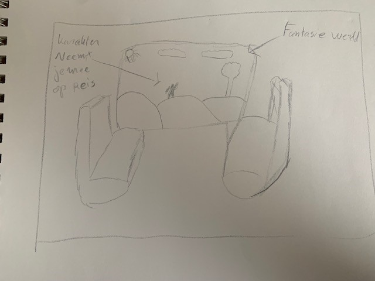

XR
Onderzoek
Minecraft Earth
Mojang StudiosMinecraft earth is een gratis te spelen augmented reality game gemaakt door Mojang Studios. De game gaat over het bouwen van constructies en het verzamelen van materialen door te reizen in de echte wereld. Ik vind dit een leuk voorbeeld, omdat de spelers van het spel hierdoor naar buiten gaan in plaats van binnen te zitten.
De technologie die in deze game gebruikt wordt is augmented reality. Hierbij worden de objecten en gebouwen van de game via de camera op het scherm geprojecteerd, zodat het lijkt alsof de objecten en gebouwen er daadwerkelijk zijn.
Peronio Pop-up Book
Ovni StudiosPeronio is een interactief spel gemaakt door Ovni Studios. Het spel vertelt een verhaal van een jongen die niet weet wat hij later wil worden. Het doel van dit spel is om kinderen op een leuke manier inzicht te geven in verschillende beroepen. Doormiddel van augmented reality wordt er een interactief boek geprojecteerd op een tafel waarin de gebruiker verschillende dingen kan doen. Bijvoorbeeld een spel waarin je te werk gaat als tandarts. Dit spel werkt ook met VR waarbij de gebruiker daadwerkelijk zijn handen kan gebruiken om het spel te besturen.
Pokemon GO
NianticPokemon Go is een app gemaakt door Niantic. Deze app is gebaseerd op het wereldberoemde video spel van Pokemon. Het bijzondere van deze app is dat pokemon GO echte locaties gebruikt om spelers aan te moedigen naar buiten te gaan en in de buurt verschillende pokemons te ontdekken.
De app maakt gebruik van augmented reality. De pokemons worden geprojecteerd in de echte wereld, bijvoorbeeld in bosjes. Als de speler de camera van de telefoon richting de pokemon houdt kan de gebruiker deze pokemon proberen te vangen door op het scherm een pokeball te gooien naar de pokemon toe.
Nieuw Concept
Reizen met vr, zodat een lange rit in de trein of een lange vlucht een stuk leuker wordt.
Het concept dat ik bedacht heb zorgt ervoor dat reizen in het openbaar vervoer een stuk leuker wordt. In dit voorbeeld gebruik ik de trein. De ramen van de trein projecteren verschillende gebeurtenissen, waardoor het voor de reiziger aanvoelt alsof ze daadwerkelijk in een film zitten en de tijd in het openbaar vervoer snel voorbij gaat. Hierbij wordt de technologie gebruikt die ook in de nieuwste auto’s gebruikt wordt zoals hieronder te zien in:
Hieronder is een schets te zien van het concept, waarin de reis door het raam te zien is.
Reflectie
In dit onderwerp was ik al meer bekend. Ook al wist ik er al wat meer van blijft het mij nog steeds interesseren. De uitvindingen met deze techniek worden steeds echter wat mij blijft verbazen. Ik vind het heel interessant dat bepaalde dingen geprojecteerd kunnen worden wat anders nooit gerealiseerd kan worden.
Ook heeft het nog invloed op de leefstijl van ons. Bijvoorbeeld Pokemon Go zorgt ervoor dat mensen weer meer naar buiten gaan in plaats van binnen op de iPad of telefoon te zitten.
In de toekomst zal de techniek nog veel uitgebreider worden en zullen de gekste dingen gemaakt kunnen worden. Ik ben heel benieuwd wat er nog aan gaat komen. Misschien kan je straks vanuit huis het gevoel hebben alsof je op vakantie bent met bijvoorbeeld UV lichten en projecties van de omgeving in een ander land.
Wat ik geleerd heb is wel wat ik verwacht had. Ik was al redelijk op de hoogte van de projecten die gebruik maken van deze technologie.